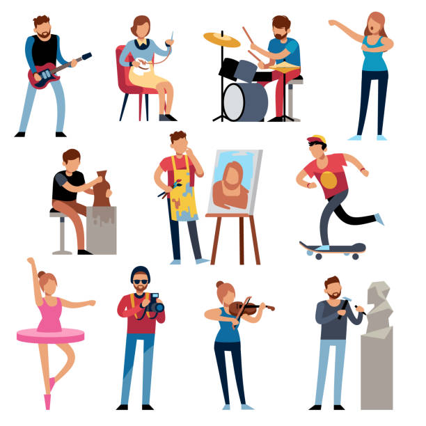

Sobre Mi
Soy una persona apasionada por el ejercicio físico, me encanta desafiarme a mí mismo constantemente. Disfruto de la intensidad y la disciplina que se requieren al hacer pesas y practicar crossfit. La sensación de superar mis propios límites y lograr metas físicas me motiva a seguir mejorando día tras día.
Además, soy una persona curiosa y siempre estoy buscando aprender cosas nuevas, ya sea sobre mi rutina de ejercicios, nutrición o cualquier otro aspecto relacionado con el bienestar. Me gusta trabajar en equipo y encuentro satisfacción en colaborar con otras personas, ya que valoro la importancia de la comunicación y la sinergia para alcanzar resultados óptimos.
Al mismo tiempo, también disfruto de trabajar en solitario, ya que me permite concentrarme y enfocarme en mis objetivos personales. En resumen, soy una persona motivada, adaptable y comprometida que encuentra alegría tanto en el trabajo en equipo como en el autodesarrollo.
Mis hobbies
Soy una persona apasionada por el aprendizaje y constantemente busco nuevas formas de expandir mis conocimientos. Disfruto sumergirme en libros que me transportan a diferentes mundos y me permiten explorar ideas y perspectivas fascinantes.
La música es otra de mis grandes pasiones, ya que encuentro en ella una fuente de inspiración y emoción. Me encanta explorar diversos géneros musicales y descubrir artistas que me sorprenden y cautivan.
Además, los automóviles son una fascinación para mí, su diseño, tecnología y rendimiento me intriguen y me gusta estar al tanto de las últimas novedades en el mundo automotriz.
Viajar es otro de mis hobbies favoritos, ya que me brinda la oportunidad de descubrir nuevas culturas, paisajes y expandir mi perspectiva del mundo. Explorar nuevos destinos y sumergirme en diferentes experiencias me llena de alegría y enriquece mi vida de muchas formas.
En resumen, soy una persona curiosa y apasionada por el aprendizaje, la lectura, la música, los automóviles y los viajes, siempre ansiosa por descubrir y conocer todo lo que el mundo tiene para ofrecer.
Disfruto de una vida activa y saludable, encontrando en las actividades al aire libre una fuente de energía y bienestar. Una de mis pasiones es ir al gimnasio y dedicar tiempo a hacer pesas y practicar crossfit. Estas actividades me desafían físicamente y me permiten superar mis propios límites, fortaleciendo mi cuerpo y mente.
Además, montar en bicicleta es otra de mis actividades favoritas, ya que me brinda la oportunidad de explorar el entorno natural, disfrutar del paisaje y mantenerme en movimiento. Salir a caminar también es parte de mi rutina, ya que me encanta respirar aire fresco, conectar con la naturaleza y recargar energías.
Además de mantenerme activo, la alimentación saludable es fundamental en mi vida. Cuido meticulosamente mis comidas, eligiendo ingredientes nutritivos y balanceados que alimenten mi cuerpo de manera óptima. Me apasiona descubrir recetas saludables y sabrosas que satisfacen mi paladar y me mantienen en un estado de bienestar. En resumen, encuentro en las actividades al aire libre, como el ejercicio en el gimnasio, el ciclismo y las caminatas, una forma de mantenerme en forma y en equilibrio con la naturaleza. Combinado con una alimentación saludable y consciente, me siento lleno de vitalidad y motivación para vivir la vida al máximo.
Actividades